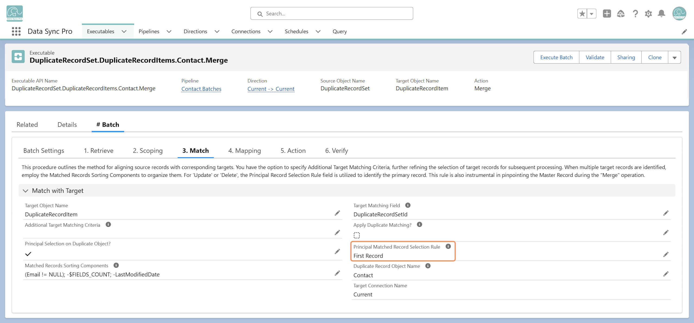

By default, DSP applies the action to all matched target records. When a Principal Matched Record Selection Rule is defined, the action runs only on the target record identified as the principal match.
